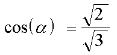

Consider 2 Amperian current elements labeled #1 and #2.
The force on Ampere current element #2 due to Ampere current element #1, placed at the coordinate origin, is given by the equation.
| | (1) |
We want to determine when the force between the 2 current elements goes to zero for the specail case (orientations) described below. The force goes to zero when the angular part of the force equation is equal to zero.
| (2) |
When both current element #1 and #2 are in the same plane and pointing in the same direction, then the angle (epsilon) is equal to zero and the angle (beta) is equal to (alpha). Equation (2) then reduces to
| (3) |
Solving for cos(alpha) we have
|  | (4) |
So when (alpha) = arccos(sqrt(2/3)), which is approximately 35.264 degrees, the force goes to zero. We label this angle (alpha-sub-zero). When current element #2 is at a position for which (alpha) is less than this angle the force will be repulsive. (Current element #2 is always pointing in the +z-axis direction.) For angles greater than (alpha-sub-zero) the force is attractive.
Next, consider the radial component of the total force between 2 dipoles.
If we take the energy equation for the interaction between 2 dipoles and take the derivative with respect to the radial coordinate, we get a force equation (for the radial coordinate only!) very similar to the Ampere current force equation. We get
| (5) |
This is not the same as the total force between 2 dipoles. This is only the radial component of the total force. There are also angular components to the total force.
Be that as it may, let us look to see at what angle this radial component of the total force goes to zero. We again set both dipoles to be in the same plane and both pointing in the +z-axis direction. We set the angular part of the equation to zero
| (6) |
Again, (epsilon) is equal to zero and (alpha) is equal to (beta). So we have
| (7) |
which leads to
| (8) |
Ploting the force on dipole #2 as it is moved around dipole #1, we get the following plot.
Note how similar the plot for the force between 2 Ampere currents elements is compared to the plot for 2 dipoles radial component. They are the same only one is rotated by 90 degrees. In both the Ampere and dipole cases angle (alpha-sub-zero) = arccos(sqrt(2/3)) (approx. 35.264 degrees) and angle (phi) = arccos(sqrt(1/3)) (approx. 54.736 degrees).
Now for some geometric connections....
If you spin a tetrahedron about one of its vertices it will define a cone. The angle of this cone is (alpha-sub-zero) = arccos(sqrt(2/3)).
Next, consider the octahedron. The octahedron can be constructed (is made up of) 8 irregular tetrahedron, one for each face of the octahedron. Any one of these tetrahedra is defined by a triangular face of the octahedron and the center of volume point within the octahedron.
If we spin this irregular tetrahedron, defined from the octahedron, the angle of the cone will be (phi) = arccos(sqrt(1/3)) (approx. 54.736 degrees).
And, the regular tetrahedron exactly fits within the irregular tetrahedron when we use a 2-frequency octahedron to define it....
And, from the diagrams, (alpha-sub-zero) + (phi) = 90.0 degrees...
Is there a "deeper" connection between these force laws and a geometry of electrodynamics or the vacuum?
Usage Note: My work is copyrighted. You may use my work but you may not include my work, or parts of it, in any for-profit project without my consent.